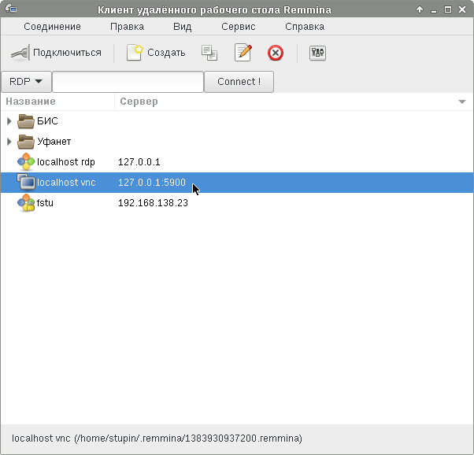
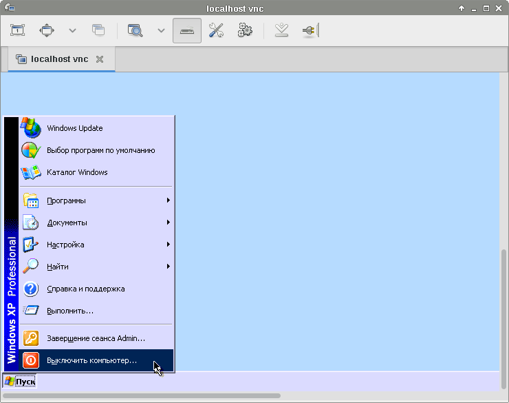

Возникла задача поставить Windows для запуска программы, которая не работает в Wine. Решил попробовать установить Windows под управлением Xen. Ранее я уже писал небольшую заметку о настройке Xen: Памятка по настройке Xen. В той статье для управления Xen использовалась утилита xm, поскольку писалась она применительно к Debian Wheezy. В этот раз будет использоваться утилита xl, поскольку дело происходит в Debian Jessie. Однако, несмотря на это различие, всё написанное в прошлой статье будет работать и сейчас. Надо всего лишь вместо xm использовать xl.
Создадим LVM-раздел, куда будем устанавливать Windows:
# lvcreate -L10G -n winxp-disk
Создадим файл конфигурации /etc/xen/winxp.cfg, который первоначально будет использоваться для установки системы:
builder = 'hvm'
device_model_version = 'qemu-xen'
memory = 1024
vcpus = 1
pae = 0
acpi = 0
apic = 0
name = 'winxp'
disk = ['phy:/dev/vg0/winxp-disk,ioemu:hda,w',
'phy:/home/stupin/WindowsXP_SP2.iso,ioemu:hdb:cdrom,r']
boot = 'd'
on_poweroff = 'destroy'
on_reboot = 'destroy'
on_crash = 'destroy'
on_xend_start = 'ignore'
on_xend_stop = 'ignore'
fullscreen = 1
sdl = 0
vnc = 1
vncconsole = 1
vncpasswd = ''
keymap = 'ru'
stdvga = 0
serial = 'pty'
usb = 1
usbdevice = 'tablet'
Особо стоит отметить следующие моменты в этом файле:
Теперь запустим виртуальную машину:
# xl create /etc/xen/winxp.cfg
На всякий случай, если вдруг виртуальная машина зависнет, приведу команду для её принудительного выключения:
# xl destroy winxp
Напоминаю, что список запущенных виртуальных машин можно посмотреть такой командой:
# xl list
После запуска можно подключиться к виртуальной машине при помощи VNC-клиента на TCP-порт 5900 по IP-адресу 5900. Я воспользовался Remmina, о которой писал в одноимённой заметке - Remmina:
Если Вы хотите подключиться по сети не из домена dom0 или у Вас имеется несколько подобных доменов domU, к которым Вы хотите подключаться по протоколу VNC, можно настроить прослушиваемый адрес и порт при помощи опции vnclisten. Например, значение 192.168.0.1:2 будет соответствовать ожиданию подключений на TCP-порт 5902 и адрес 192.168.0.1.
Настроить переключение раскладки по нажатию Alt+Shift мне не удалось - это сочетание в сеанс VNC не попадало, поэтому пришлось настроить непривычное для меня сочетание Ctrl+Shift.
После установки Windows нужно выключить виртуальную машину, воспользовавшись пунктом меню "Выключить компьютер", доступным по нажатию кнопки "Пуск":
Теперь нужно немного изменить конфигурацию в файле /etc/xen/winxp.cfg. Включим опции acpi и apic, уберём из списка дисков ISO-образ установочного компакт-диска и поменяем значение опции boot на c - загрузка "с диска C:":
acpi = 1 apic = 1 disk = ['phy:/dev/vg0/winxp-disk,ioemu:hda,w'] boot = 'c'
Ещё одна вещь, которая мне понадобилась - это пробросить флешку вовнутрь виртуальной машины. Для начала я вставил её в компьютер и нашёл её в списке имеющихся в системе USB-устройств при помощи команды:
$ lsusb -v | less
В несколько сокращённом виде, нужная мне флешка выглядела следующим образом:
Bus 001 Device 005: ID 0930:6534 Toshiba Corp. TravelDrive
Device Descriptor:
...
idVendor 0x0930 Toshiba Corp.
idProduct 0x6534 TravelDrive
bcdDevice 1.00
iManufacturer 1 Kingston
iProduct 2 DataTraveler 2.0
iSerial 3 0201101728450
bNumConfigurations 1
Configuration Descriptor:
...
Interface Descriptor:
bLength 9
bDescriptorType 4
bInterfaceNumber 0
bAlternateSetting 0
bNumEndpoints 3
bInterfaceClass 8 Mass Storage
Чтобы флешка автоматически пробрасывалась в виртуальную машину, нужно отредактировать список USB-устройств в файле конфигурации /etc/xen/winxp.cfg:
usbdevice = ['tablet', 'host:0930:6534']
Если в системе имеется несколько устройств с одинаковыми идентификаторами производителя и модели, то можно указать номер шины и устройства. В нашем случае это будет выглядеть вот так:
usbdevice = ['tablet', 'host:1.5']
Однако стоит учесть, что при отключении и повторном включении устройство может получить другой номер. Использовать идентификаторы производителя и модели.
В случае с утилитой xm можно было бы вставлять и удалять устройства налету, вот так:
# xm usb-add winxp host:0930:6534 # xm usb-del winxp host:0930:6534
Однако, в утилите xl подобная функциональность пока не реализована и для введения настроек в силу понадобится завершить работу виртуальной машины и запустить её снова, с использованием исправленной конфигурации.